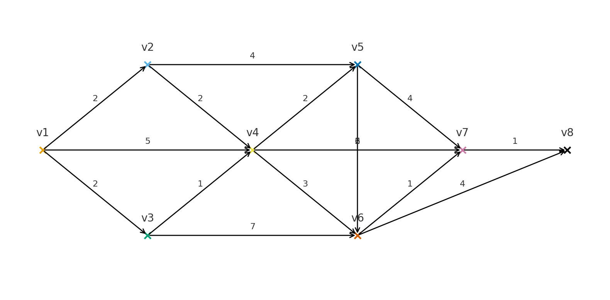

Your goal is to compute a valid path in a small directed, weighted graph
from the start node v1 to the target node v8,
subject to a set of hard constraints. Among all valid paths, you must pick
the one with the minimum total edge weight.
The directed, weighted graph for this task is shown in the diagram below. Each edge label is a non-negative integer weight on that directed edge.
v1.v8.v4 and v6.v4 must appear before v6 along the path.v3.v1 to v8 that satisfy the above rules,
you must choose the one with the minimum total weight
(sum of edge weights along the path).This instance is designed so that there is exactly one path that satisfies all constraints and has the minimum possible total weight.
Implement your solution in:
solutions/task5/find_path.pyYour program may hard-code the graph structure after inspecting the diagram. It does not need to read any other input files.
The evaluation harness will run:
python solutions/task5/find_path.py > results/task5_answer.txtYou must write your final answer to:
results/answer.txtThe file must contain at least the first line below, and may optionally contain a second line.
PATH: v1->v2->v3->v4->v5->v8
-> as the separator, with no spaces. The above example is just an example for reference.
TOTAL_WEIGHT: <integer>The evaluation system will compare the path sequence on the first line byte-for-byte against the reference answer. Any difference in content, spelling, capitalization, or formatting will be marked incorrect.